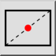

Midtre håndbok
Verktøylinje/ikon:


Meny: Snap > Midtre håndbok
Snarvei: S, N
Kommandoer: snapmiddlemanual | sn
Dette er en automatisk oversettelse.
Verktøylinje/ikon:


Dette verktøyet lar deg feste til et punkt som er i midten mellom to punkter. Dette brukes oftest til å feste til senteret av et rektangel eller polygon ved å velge to diagonalt motsatte hjørner.
import SnapMiddleManualFigure from './SnapMiddleManualFigure.png';
som definerer midtpunktet. For eksempel ett hjørne av et rektangel.
hjørnet av rektangelet.